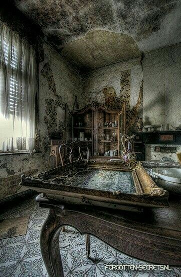
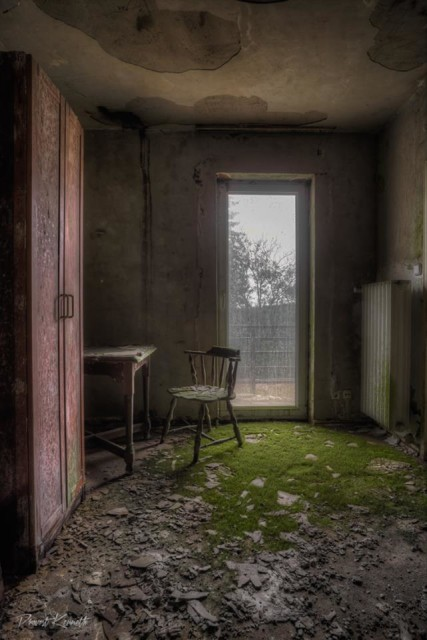

2. Хата, у якой немагчыма пераначаваць
Зноўку вітаначкі! Гэта другая частка блогу. Накшталт мы даехалі да месца. Насамрэч сюды было дастаткова складана даехаць, па-першае з-за таго, што тут няма праезду машын, таму нам прыйшлося кінуць машыну ў бліжэйшай вёсцы. А потым ісці пешым прыкладна 3 гадзіны па балотах да вёскі.
Яшчэ мы трошкі паслухалі цікавыя гісторыі пра тое месца: кажуць, што час ад часу там знікаюць людзі і міліцыя іх не знаходзіць болей, але на такіх вось вылазках там ловяць розную шпану ў выглядзе марадзёраў, бамжэй, валацугаў, бадзягаў й наркаманаў. Але ні яны не бачылі зніклых людзей, ні міліцыя не знаходзіла целы. Яшчэ казалі, што раней там хаваліся розныя маньякі, бо час ад часу знаходзілі парубленыя целы, нават сяляне стваралі паўкі, якія патрулявалі тэрыторыю вёскі. Вось пра забойцаў гісторыі нас трошкі напалохалі. Людзі нам прапанавалі купіць нават кінжалы. Мы купілі :) Але там валялася шмат такога барахла, мабыць яны ўсім разявам гэта прадаюць… Але мы ўсё ж вырашылі працягнуць свой шлях, але раніцай. Мы, канешне, плануем начоўку, але дайсці б праз балоты не ноччу, каб у іх не патануць. Мабыць людзі ў іх і загібалі…

Калі мы прыйшлі ў вёску, мы адчулі нейкі дзіўны пах. Не ведаю, на што падобна, штосьці сярэдняе паміж тухлай рыбай і часнаком. А яшчэ мы адчувалі на сябе нейкі зрок… Гэта нас больш усяго і напружвала. Хаця да гэтага мы звыкліся, бо кожны раз мы гэта адчуваем на сябе. Вёска была разбурана, мала чаго засталося цэлым, толькі чамусьці капліца засталася цэлай. Першы час мы вырашылі абыйсці вёску, мабыць што цікавага знойдзем, але не, нічога няма. Самае цікавае, што было - вёска быццам бы пад балота ўходзіць. А потым здзіўляюцца, куды знікаюць людзі… Ну і дастаткова шма шкілетаў было розных жывёл. Накшталт мы дайшлі да месца і пачалі аглядаць будынак. Быў ён дастаткова вялікі. На ўваходзе была раздзевалка нейкая, далей ішоў вялізарны стол, быццам бы за якім сядзелі князі Княства Літоўскага, але будынак не такі стары, а хацелася б… Спачатку мы пачалі аглядаць раздзявалку, тут было шмат ікон… Было дастаткова жудасна, бо ў іх не было твараў, быццам бы іх адрубілі ці абарвалі… На капліцы ж былі нармалёвыя іконы.. Сустрэнемся праз нейкі час!

Наступны: 3. Гісторыі на сайце Беларускага філіялу
Ацэнка: 7.5/10
Філіял: Беларускі
Аўтар: Хведар Звычайны